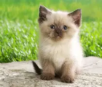
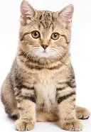

Os gatos estão entre os animais de estimação mais populares do mundo, mas ainda carregam uma aura de mistério.

Os gatos são animais de estimação que, embora populares, ainda carregam uma aura de mistério. Eles são conhecidos por sua independência, limpeza e independência, o que os torna atraentes para muitos tutores. Além disso, os gatos têm uma alta sensibilidade a vibrações e conseguem "farejar" com a boca, o que os torna ainda mais fascinantes.